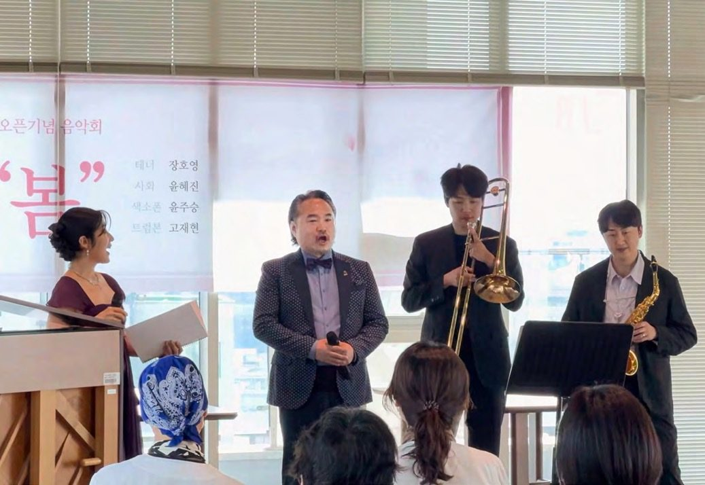
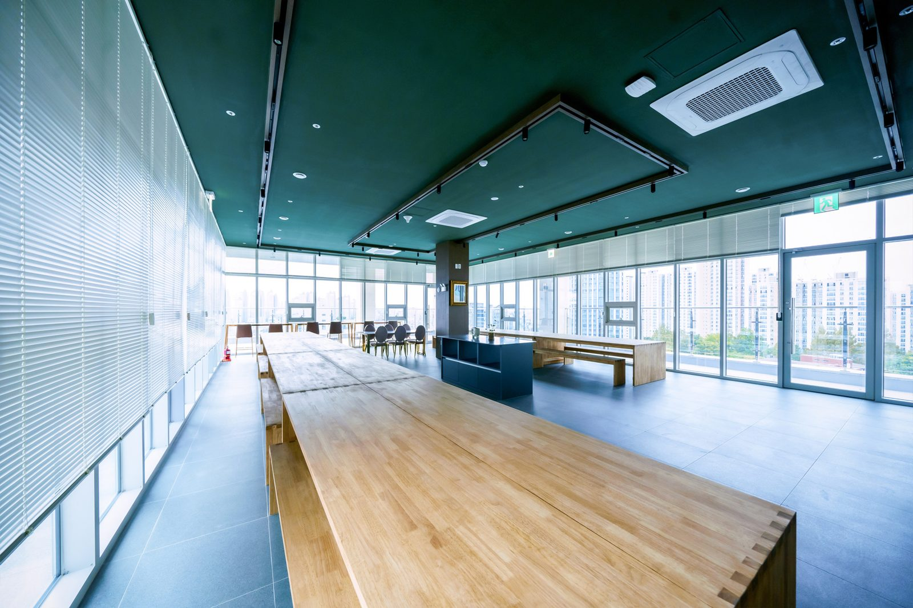

소식
소식지 웹판, 초청 특강, 월별 프로그램 공지를 이 페이지에 올립니다. 입원 안내·단기입원·외래·비용은 각 안내 페이지에 있고, 이 페이지에는 기간이 있는 소식만 올립니다. 최근 글부터 위에 둡니다.

- 올리는 글
- 소식지 웹판(여름호·가을호) · 초청 특강 안내 · 월별 프로그램 공지
- 프로그램 예약
- 카카오톡 채널 · 병동 간호사실(입원) · 원내 상담실(외래)
- 문의
- 원내 상담실 · 카카오톡 채널 · 062-439-1000
최근 소식
2026 가을 하일렌소식 「회복의 계절」
하일렌요양병원 의료진과 나눈 지난 항암 토크 콘서트입니다. 오는 10월 23일에는 초청 교수님 두 분과 함께합니다. 편백숲 트레킹, 뜨개공방·매듭공예·캘리그라피, 특식데이, 암정보 도서관 소식 네 편을 담았습니다.
2026년 10월 치료·회복 프로그램 안내
하루 흐름과 요일표, 연휴 운영, 암기공 일정, 참여 방법을 안내합니다. 아래 절에서 바로 보실 수 있습니다.
10월 23일(금) 대학병원 교수 초청 특강
이창영 교수 「폐암 수술의 최신 경향」, 강상욱 교수 「갑상선 암의 진단과 치료」. 오전 10시 30분, 10층 스카이라운지.
10월 23일 대학병원 교수 초청 특강
날짜와 시간, 장소, 연자, 강의 제목만 적습니다.

- 날짜·시간
- 2026년 10월 23일(금) 오전 10시 30분부터 12시까지
- 장소
- 하일렌요양병원 10층 스카이라운지
- 1부 10시 30분
- 이창영 교수 「폐암 수술의 최신 경향」 [디렉터 확인] 연자 소속 병원명 B-10 예외 추가 여부(D2 #58). 확정 전까지 병원명 없이 씁니다.
- 2부 11시 10분
- 강상욱 교수 「갑상선 암의 진단과 치료」 [디렉터 확인] 가을호 표지는 「갑상선암의 진단과 치료」, 내지와 10월 공지는 「갑상선 암의 진단과 치료」로 띄어쓰기가 다릅니다. 어느 쪽으로 통일할지
특강 안내 전체는 2026 가을 하일렌소식에 있습니다. 궁금한 점은 원내 상담실(062-439-1000) 또는 카카오톡 채널로 물어보세요.
2026년 10월 치료·회복 프로그램 안내
2026년 10월 프로그램 공지를 홈페이지용으로 정리한 글입니다.
하일렌요양병원은 전남광주 서구에 있는 암요양병원으로, 암 치료 과정의 회복을 돕는 곳입니다. 암 치료 자체는 현재 진료중인 대학병원에서 이어지고, 그 사이의 회복은 하일렌요양병원이 입원과 외래로 관리합니다. 입원 중이 아니어도, 통원하시면서 참여하실 수 있습니다. 10월 프로그램은 아침 걷기, 낮 손작업, 오후 암재활 그룹 운동치료, 저녁 움직임과 마음 돌보기로 이어집니다. 프로그램 각각의 설명은 프로그램 안내에 있습니다.
연휴에도 이어지는 치료
10월 3일부터 5일까지, 그리고 10월 9일 연휴에도 면역 주사제, 고주파온열암치료, 고압산소치료, 도수치료, 림프 관리는 이어집니다.
10월부터 달라지는 것
암재활 그룹 운동치료는 10월 2일(금)부터 수·금요일 오후 2시 30분에 3층 재활치료실에서 한 시간 동안 진행합니다. 근력, 균형, 일상 동작을 익힙니다. 퇴원 뒤 집에서도 할 수 있는 동작입니다. 수술 부위에 따라 동작을 바꿉니다. 처음 오시는 분은 수술 부위와 수술 날짜만 말씀해 주시면 됩니다. 운동 범위는 주치의가 환자 상태를 보고 환자와 상담을 통해 결정합니다. [디렉터 확인] 공지 원고에 「10월 2일부터 신설」과 「9월까지 월·수·금, 10월부터 수·금」이 함께 적혀 있습니다. 신설인지 요일 변경인지
하루 흐름과 요일표
편백숲 트레킹은 컨디션이 허락하는 날 함께 나서는 프로그램입니다. 아침 8시 50분에 1층 주차장에서 출발하고, 코스 난이도는 고를 수 있습니다. 걷고 나서 차와 과일 간식을 드립니다. [디렉터 확인] B-22 숙박·식사·물품 무상 제공 해당 여부(D2 #27) 원내 프로그램의 요일과 시간은 아래 표와 같습니다.
| 시간대 | 프로그램 | 10월 요일·일자 | 장소 |
|---|---|---|---|
| 낮 1시 30분 | 매듭공예 | 화요일 | 10층 스카이라운지 |
| 낮 1시 30분 | 다도 | 목요일 | 10층 스카이라운지 |
| 낮 1시 30분 | 뜨개공방 | 10월 9일 | 10층 스카이라운지 |
| 낮 1시 30분 | 천연체험공방(폼클렌징) | 10월 12일·28일 | 10층 스카이라운지 |
| 오후 2시 30분 | 암재활 그룹 운동치료(1시간) | 수·금요일 | 3층 재활치료실 |
| 저녁 6시 30분 | 라인댄스 | 월요일 | 3층 |
| 저녁 6시 40분 | 요가 | 화·목요일 | 3층 |
| 저녁 6시 30분 | 명상(김성훈 수석병원장 진행) | 수요일 | 10층 힐링프로그램실 |
| 저녁 6시 30분 | 캘리그라피 | 금요일 | 10층 스카이라운지 |
| 낮 1시 | 주말영화 | 토·일요일 | 10층 힐링프로그램실 |
암기공, 암을 이기는 공부
10월 암기공은 두 번 열립니다. 10월 7일(수) 저녁 6시 30분 「운동과 면역」, 10월 12일(월) 저녁 7시 「하일렌 치료 안내」(오리엔테이션)입니다. 장소는 10층 힐링프로그램실입니다.
그 밖의 일정
주말영화는 토·일요일 낮 1시에 10층 힐링프로그램실에서 상영합니다. 미사는 10월 14일(수) 오후 2시입니다. [디렉터 확인] 미사 장소와 홈페이지 게시 여부
참여 안내
참여는 입원·외래(통원) 환자 모두 가능합니다. 신청과 문의는 카카오톡 채널, 병동 간호사실(입원), 원내 상담실(외래)로 해 주세요. 일정은 병원 사정에 따라 바뀔 수 있습니다. 개인 상태에 따라 참여 가능 프로그램이 다릅니다. 참여 전 담당 의료진과 상의해 주세요.
10월 프로그램 자주 묻는 질문
특강은 언제, 누가 들을 수 있나요
10월 23일(금) 오전 10시 30분부터 12시까지 10층 스카이라운지에서 열립니다. 누구나 참여할 수 있고 따로 신청하지 않아도 됩니다. 문의는 카카오톡 채널로 해 주세요.
연휴에도 치료를 받을 수 있나요
10월 3일부터 5일까지, 그리고 10월 9일 연휴에도 면역 주사제, 고주파온열암치료, 고압산소치료, 도수치료, 림프 관리는 이어집니다.
프로그램 신청은 어떻게 하나요
카카오톡 채널 또는 병동 간호사실에 말씀해 주세요. 외래로 통원하시는 분은 원내 상담실로 문의하셔도 됩니다.
10월에 어떤 프로그램이 있나요
편백숲 트레킹, 매듭공예, 다도, 뜨개공방, 천연체험공방, 암재활 그룹 운동치료, 라인댄스, 요가, 명상, 캘리그라피, 암기공, 주말영화가 있습니다. 요일과 장소는 위 표를 봐 주세요.
이 글은 치료 과정의 정보 안내를 위한 것입니다. 개인 상태에 따라 참여 가능 프로그램이 다르니 참여 전 담당 의료진과 상의해 주세요.
지난 소식지
소식지 웹판은 호별로 이 페이지에 올립니다. 2026 여름호 웹판은 준비 중입니다. [디렉터 확인] 소식 게시판을 현 자유게시판 재사용으로 할지 신설할지, 여름호 웹판 게시 여부

프로그램 예약은 카카오톡 채널에서, 입원·외래·단기입원 상담은 원내 상담실에서 안내합니다. [디렉터 확인] 전화·카카오 응대 가능 시간, 부재중일 때 재연락 방식(D2 9-1 신설 행)
제공 하일렌요양병원 · 검토 [디렉터 확인] 검토 의료진 · 검토일 [디렉터 확인] 검토일 · 출처 하일렌 소식지 2026 가을호 인쇄본(9/18), 2026년 10월 프로그램 공지(9/30), 하일렌 발행정본 확정 표기(2026-08-20 병원 검수) · 갱신 2026-10-05